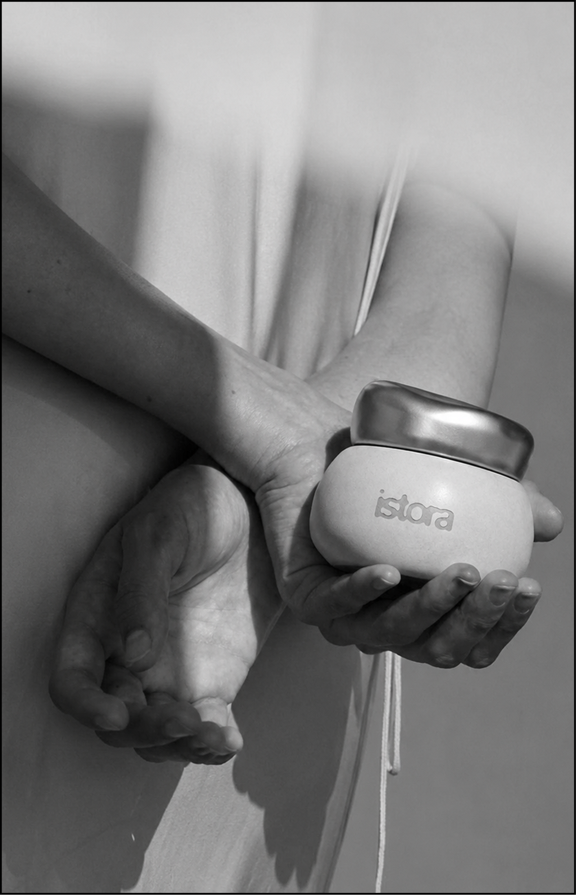

Сухой воздух в помещениях, работа кондиционеров и отопительных систем постепенно снижают уровень увлажнённости кожи. В таких условиях особенно важно использовать насыщенные текстуры, которые помогают удерживать влагу внутри кожи. Баттер для тела Istora с пантенолом интенсивно питает кожу и способствует восстановлению её защитного барьера, уменьшая сухость и ощущение стянутости.
Каждый климат создаёт свои особенности ухода. В жаркую погоду кожа чаще сталкивается с обезвоживанием, а зимой — с сухостью и раздражением из-за холодного воздуха и ветра. Для успокаивающего ухода в любое время года подойдёт баттер для тела Istora с центеллой азиатской. Центелла известна своими восстанавливающими свойствами и помогает коже легче адаптироваться к внешним стрессовым факторам.